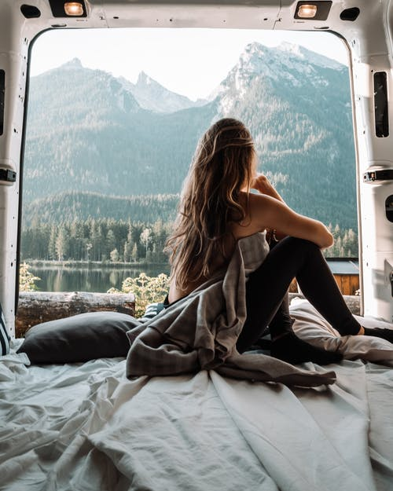

WANDERLUST
La etimología de wanderlust nos lleva hasta la
lengua germana. Wandern significa
“vagar”, mientras
que lust lo traducimos como “pasión”. Esto derivaría más tarde en el término anglosajón
wanderlust o
lo que es lo mismo: pasión por viajar.
Se hace referencia al Síndrome Wanderlust para hablar de aquellos individuos
cuyo principal objetivo
en la vida es viajar. El síndrome se asocia rápidamente a los jóvenes, pero lo cierto es que
cualquiera puede padecerlo.
Aquellos que sufren deseos irrefrenables por explorar la geografía mundial, conocer culturas
distintas a la propia y, en definitiva, abandonar su zona de confort, se incluyen fácilmente en
este
grupo. Prefieren llamarse a sí mismos viajeros, no turistas.
Si bien es cierto que no hay una única forma de viajar, aquellos que sufren la enfermedad del viajero reúnen unas características que se repiten: la ausencia de equipaje excesivo, la búsqueda constante de aventuras, la huida de la vida rutinaria y, en general, la improvisación en sus viajes.